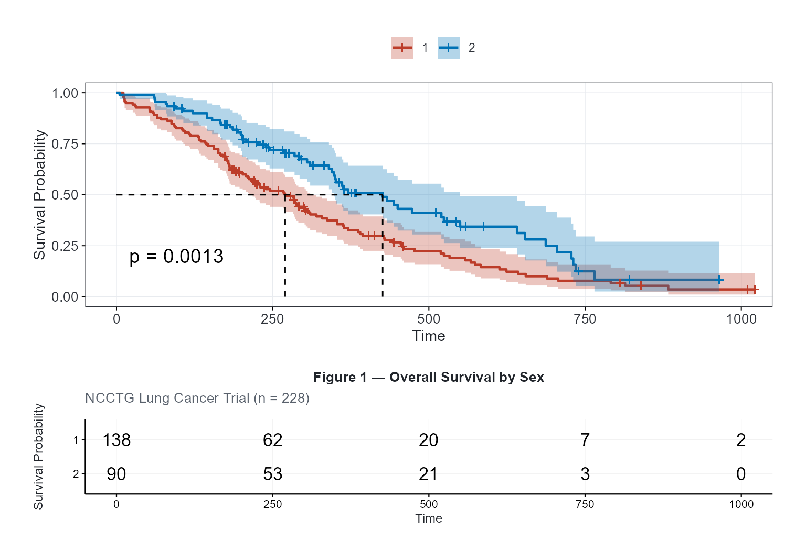
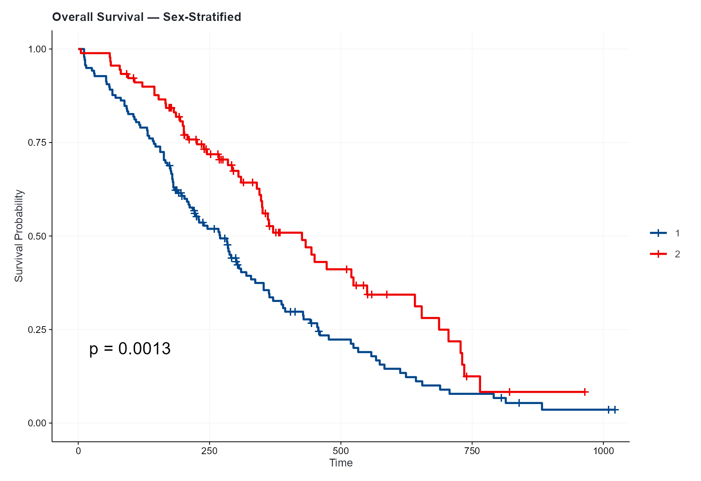
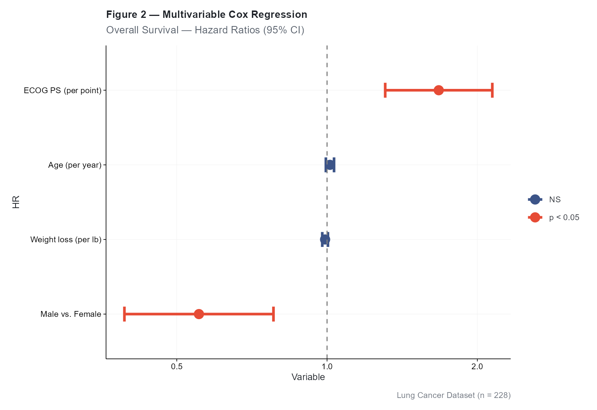
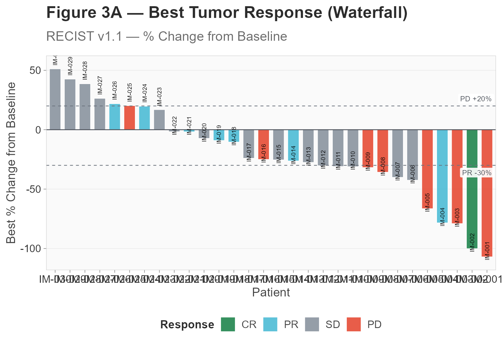
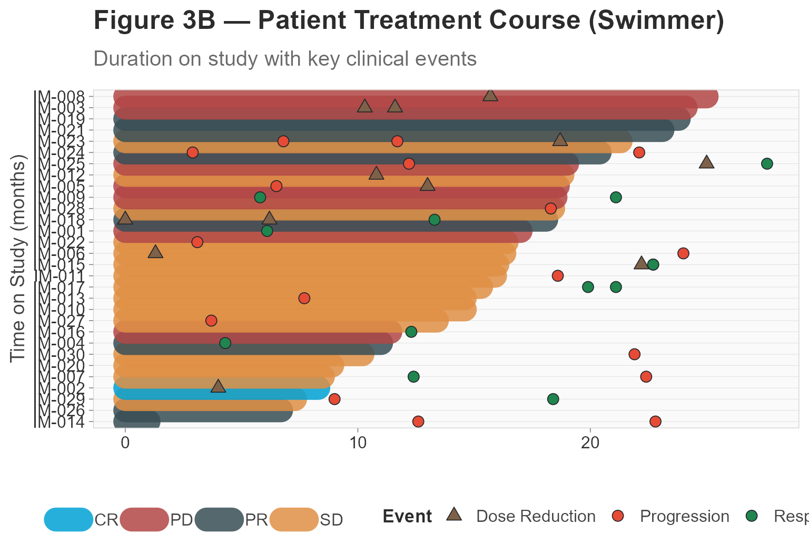
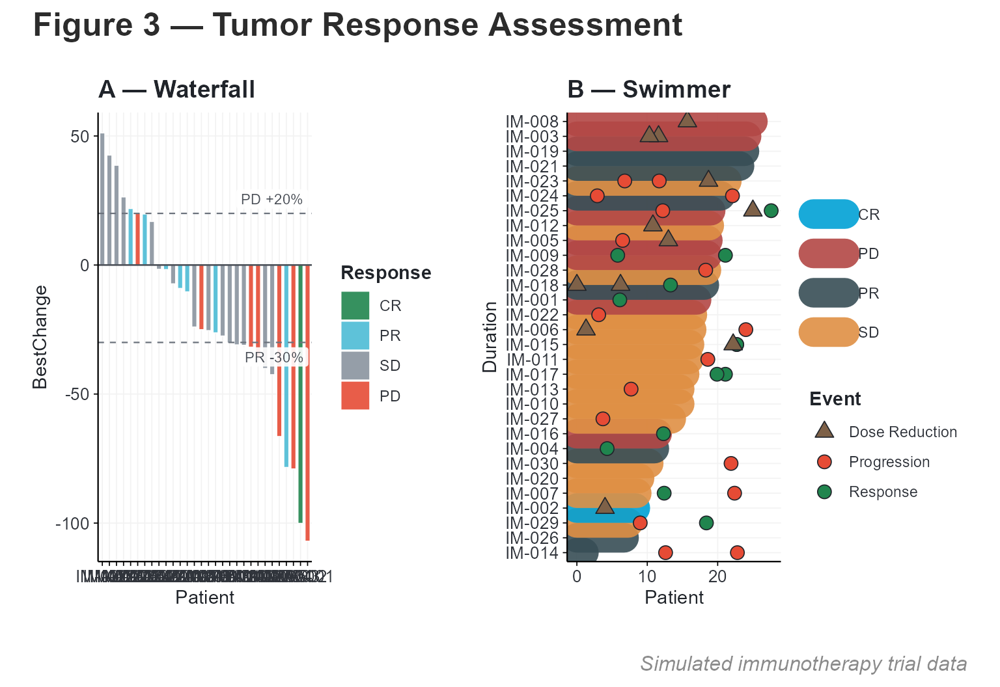
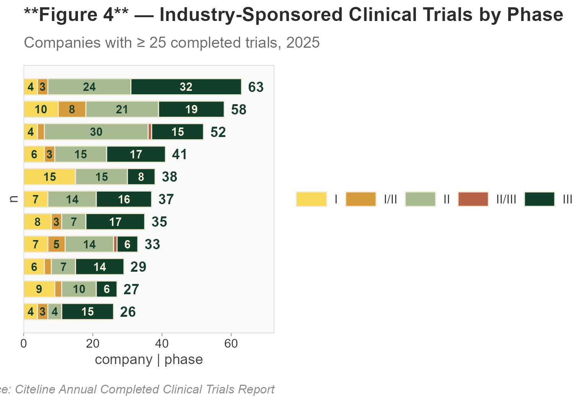

End-to-End Oncology Analysis with cliomicplot
Lucas VHH Tran
2026-07-16
Source:vignettes/oncology.Rmd
oncology.RmdOverview
This vignette demonstrates a complete oncology clinical data analysis workflow using cliomicplot. We’ll generate four publication-quality figures commonly found in oncology manuscripts:
- Figure 1 — Kaplan-Meier overall survival curves
- Figure 2 — Forest plot from multivariable Cox regression
- Figure 3A — Waterfall plot of best tumor response
- Figure 3B — Swimmer plot of patient treatment courses
library(cliomicplot)
#> cliomicplot 0.1.0 - Publication-ready clinical & omics plots
#> Main function: cliplot() | Themes: clitheme() | Params: clipar()
library(survival)
# Set global defaults for this analysis
clipar(
palette.qualitative = "nejm",
stat.test = NULL,
file.res = 600
)Figure 1: Kaplan-Meier Survival Curves
We use the lung dataset from the
survival package to visualize overall survival
stratified by sex.
clitheme("nejm")
#> Theme set to: nejm
cliplot(Surv(time, status) ~ sex, data = lung,
type = type_km(
risk_table = TRUE,
pval = TRUE,
conf_int = TRUE,
median_line = TRUE
),
palette = "nejm",
title = "**Figure 1** — Overall Survival by Sex",
subtitle = "NCCTG Lung Cancer Trial (n = 228)",
xlab = "Time (days)",
ylab = "Survival Probability",
legend = "top") +
cli_markdown()
#> Warning: Using `size` aesthetic for lines was deprecated in ggplot2 3.4.0.
#> ℹ Please use `linewidth` instead.
#> ℹ The deprecated feature was likely used in the ggpubr package.
#> Please report the issue at <https://github.com/kassambara/ggpubr/issues>.
#> This warning is displayed once per session.
#> Call `lifecycle::last_lifecycle_warnings()` to see where this warning was
#> generated.
#> Scale for colour is already present.
#> Adding another scale for colour, which will replace the existing scale.
#> Scale for fill is already present.
#> Adding another scale for fill, which will replace the existing scale.
#> Ignoring unknown labels:
#> • colour : ""
Key features demonstrated:
-
type_km()with risk table, p-value, confidence intervals, and median survival line -
clitheme("nejm")for NEJM-style typography -
cli_markdown()for bold formatting in the title
Customizing KM plots
# Without risk table, cleaner look
cliplot(Surv(time, status) ~ sex, data = lung,
type = type_km(risk_table = FALSE, conf_int = FALSE),
palette = "lancet",
theme = "lancet",
title = "**Overall Survival** — Sex-Stratified") +
cli_markdown()
#> Scale for colour is already present.
#> Adding another scale for colour, which will replace the existing scale.
#> Scale for fill is already present.
#> Adding another scale for fill, which will replace the existing scale.
Figure 2: Forest Plot — Multivariable Cox Regression
Fit a Cox proportional hazards model and visualize the hazard ratios:
# Fit Cox model
cox_fit <- coxph(Surv(time, status) ~ age + sex + ph.ecog + wt.loss, data = lung)
cox_sum <- summary(cox_fit)
# Extract results into a forest-plot-ready data frame
forest_df <- data.frame(
Variable = c("Age (per year)", "Male vs. Female",
"ECOG PS (per point)", "Weight loss (per lb)"),
HR = cox_sum$conf.int[, "exp(coef)"],
CI_low = cox_sum$conf.int[, "lower .95"],
CI_high = cox_sum$conf.int[, "upper .95"],
P = cox_sum$coefficients[, "Pr(>|z|)"]
)
forest_df
#> Variable HR CI_low CI_high P
#> age Age (per year) 1.0134589 0.9945143 1.0327643 1.649509e-01
#> sex Male vs. Female 0.5538981 0.3928084 0.7810504 7.535384e-04
#> ph.ecog ECOG PS (per point) 1.6738244 1.3075807 2.1426504 4.340524e-05
#> wt.loss Weight loss (per lb) 0.9910344 0.9781867 1.0040508 1.761353e-01
clitheme("lancet")
#> Theme set to: lancet
cliplot(HR ~ Variable, data = forest_df,
type = type_forest(
ref_line = TRUE,
sort = TRUE,
point_size = 4,
ci_width = 1.2,
sig_color = "#E64B35",
ns_color = "#3C5488"
),
title = "**Figure 2** — Multivariable Cox Regression",
subtitle = "Overall Survival — Hazard Ratios (95% CI)",
caption = "Lung Cancer Dataset (n = 228)") +
cli_markdown()
#> `height` was translated to `width`.
Figure 3A: Waterfall Plot — Tumor Response
Generate a simulated immunotherapy trial dataset and visualize best tumor response:
set.seed(42)
n_pts <- 30
imtrial <- data.frame(
Patient = paste0("IM-", sprintf("%03d", 1:n_pts)),
BestChange = sort(rnorm(n_pts, mean = -22, sd = 32)),
BestResp = sample(c("CR", "PR", "SD", "PD"), n_pts,
replace = TRUE,
prob = c(0.07, 0.30, 0.36, 0.27)),
Duration = pmax(1, round(rnorm(n_pts, mean = 14, sd = 7), 1)),
Arm = sample(c("Anti-PD1", "Chemotherapy"), n_pts, replace = TRUE)
)
# Show first few rows
head(imtrial)
#> Patient BestChange BestResp Duration Arm
#> 1 IM-001 -107.00657 PD 17.0 Chemotherapy
#> 2 IM-002 -100.09494 CR 8.3 Chemotherapy
#> 3 IM-003 -79.00187 PD 24.1 Anti-PD1
#> 4 IM-004 -78.42122 PR 11.0 Anti-PD1
#> 5 IM-005 -66.44354 PD 18.6 Anti-PD1
#> 6 IM-006 -42.47984 SD 16.3 Anti-PD1
clitheme("broadsheet")
#> Theme set to: broadsheet
cliplot(BestChange ~ Patient, data = imtrial,
type = type_waterfall(
show_labels = TRUE,
label_size = 2.5,
bar_width = 0.75,
response_thresholds = c("PD" = 20, "SD" = -30)
),
title = "**Figure 3A** — Best Tumor Response (Waterfall)",
subtitle = "RECIST v1.1 — % Change from Baseline",
ylab = "Best % Change from Baseline",
legend = "bottom") +
cli_markdown()
Figure 3B: Swimmer Plot — Patient Timelines
Add clinical event markers to the patient timeline:
set.seed(123)
n_events_per_pt <- sample(1:3, n_pts, replace = TRUE)
n_total_events <- sum(n_events_per_pt)
events_df <- data.frame(
ID = rep(imtrial$Patient, times = n_events_per_pt),
Time = round(runif(n_total_events, 0, 28), 1),
Event = sample(c("Progression", "AE Gr≥3", "Dose Reduction", "Response"),
n_total_events,
replace = TRUE, prob = c(0.3, 0.25, 0.2, 0.25))
)
head(events_df)
#> ID Time Event
#> 1 IM-001 13.4 AE Gr≥3
#> 2 IM-001 21.2 AE Gr≥3
#> 3 IM-001 6.1 Response
#> 4 IM-002 8.9 AE Gr≥3
#> 5 IM-002 6.5 AE Gr≥3
#> 6 IM-002 4.0 Dose Reduction
cliplot(Duration ~ Patient, data = imtrial,
type = type_swimmer(
bar_fill = "BestResp",
event_times = events_df,
bar_alpha = 0.85
),
palette = "jco",
title = "**Figure 3B** — Patient Treatment Course (Swimmer)",
subtitle = "Duration on study with key clinical events",
xlab = "",
ylab = "Time on Study (months)",
legend = "bottom") +
cli_markdown()
#> Warning: Removed 21 rows containing missing values or values outside the scale range
#> (`geom_point()`).
Combined Multi-Panel Figure
Use patchwork to combine the waterfall and swimmer plots:
library(patchwork)
#> Warning: package 'patchwork' was built under R version 4.5.1
# Regenerate with consistent theme
p1 <- cliplot(BestChange ~ Patient, data = imtrial,
type = type_waterfall(show_labels = FALSE, bar_width = 0.7),
theme = "cli_minimal",
title = "**A** — Waterfall") + cli_markdown()
p2 <- cliplot(Duration ~ Patient, data = imtrial,
type = type_swimmer(bar_fill = "BestResp", event_times = events_df),
theme = "cli_minimal",
title = "**B** — Swimmer") + cli_markdown()
p1 + p2 +
plot_annotation(
title = "**Figure 3** — Tumor Response Assessment",
caption = "Simulated immunotherapy trial data",
theme = ggplot2::theme(plot.title = ggtext::element_markdown())
)
#> Warning: Removed 21 rows containing missing values or values outside the scale range
#> (`geom_point()`).
Saving Figures for Publication
# Save individual figures as high-resolution files
cliplot(Surv(time, status) ~ sex, data = lung,
type = type_km(risk_table = TRUE),
theme = "nejm", palette = "nejm",
file = "fig1_km.pdf", width = 8, height = 6)
cliplot(HR ~ Variable, data = forest_df,
type = type_forest(),
theme = "lancet",
file = "fig2_forest.pdf", width = 7, height = 4.5)
cliplot(BestChange ~ Patient, data = imtrial,
type = type_waterfall(),
theme = "broadsheet",
file = "fig3_waterfall.pdf", width = 10, height = 5.5)Figure 4: Clinical Trials Pipeline — Stacked Bar Chart
The new type_trials() creates a horizontal stacked bar
chart ideal for showing trial pipelines, project portfolios, or any
categorical breakdown within groups:
# Simulated trial pipeline data
pipeline <- data.frame(
company = rep(c("AstraZeneca", "Roche", "MSD", "Lilly", "Hengrui",
"Sanofi", "Novartis", "BMS", "J&J", "Pfizer", "AbbVie"),
each = 5),
phase = rep(c("I", "I/II", "II", "II/III", "III"), 11),
n = c(4,3,24,0,32, 10,8,21,0,19, 4,2,30,1,15, 6,3,15,0,17,
15,0,15,0,8, 7,0,14,0,16, 8,3,7,0,17, 7,5,14,1,6,
6,2,7,0,14, 9,2,10,0,6, 4,3,4,0,15)
)
phase_colors <- c(
"I" = "#F8D95C", "I/II" = "#D69B3C", "II" = "#A7BA91",
"II/III" = "#B76348", "III" = "#123F2A"
)
phase_text <- c(
"I" = "#173E2B", "I/II" = "#173E2B", "II" = "#173E2B",
"II/III" = "white", "III" = "#F6F1DE"
)
cliplot(n ~ company | phase, data = pipeline,
type = type_trials(
segment_colors = phase_colors,
segment_text_colors = phase_text,
label_threshold = 3
),
title = "**Figure 4** — Industry-Sponsored Clinical Trials by Phase",
subtitle = "Companies with ≥ 25 completed trials, 2025",
caption = "Source: Citeline Annual Completed Clinical Trials Report")
Customization
| Parameter | Default | Description |
|---|---|---|
segment_colors |
NULL (jco palette) |
Named vector mapping segments to fill colours |
segment_text_colors |
NULL (auto dark) |
Named vector mapping segments to label text colours |
bar_height |
0.72 |
Bar height as fraction of row spacing |
label_threshold |
3 |
Minimum segment width to show internal label |
show_totals |
TRUE |
Show total count label to the right |
Summary
In this vignette we produced four publication-ready oncology figures using cliomicplot’s specialized plot types. The key takeaways:
-
type_km()for survival curves with risk tables -
type_forest()for Cox regression hazard ratios -
type_waterfall()for tumor response visualization -
type_swimmer()for patient-level timelines -
type_trials()for clinical trial pipeline stacked bar charts -
clitheme()for journal-specific styling -
cli_markdown()for rich text formatting
Reset global settings when done: